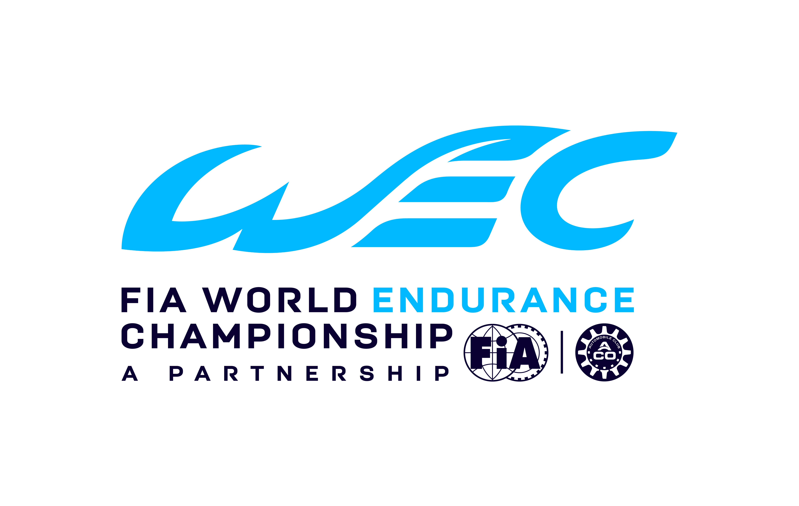

O FIA World Endurance Championship (WEC) é o principal campeonato mundial de corridas de endurance em carros esportivos, organizado pela FIA e ACO desde 2012. O formato inclui provas de 6 a 24 horas, com equipes de 2 a 3 pilotos dividindo o carro em turnos .
A história do WEC começa com as raízes das corridas de longa duração, que remontam ao início do século XX. A mais famosa dessas provas, as 24 Horas de Le Mans, foi criada em 1923, na França, e se tornou rapidamente um símbolo de resistência, velocidade e inovação no automobilismo. Com o tempo, outras corridas de endurance foram ganhando destaque, como as 12 Horas de Sebring (EUA) e as 1000 km de Spa (Bélgica), e, a partir da década de 1950, a FIA criou o "Campeonato Mundial de Carros Esporte", que organizava essas corridas em um calendário global.
Esse campeonato teve várias fases, nomes e mudanças ao longo das décadas. Foi muito forte nas décadas de 1970 e 1980, com grandes disputas entre marcas como Porsche, Jaguar, Mercedes-Benz, Ferrari e Toyota. No entanto, por questões econômicas e mudanças no cenário do automobilismo, o campeonato perdeu força nos anos 1990 e acabou sendo descontinuado.
A tradição das corridas de endurance, porém, nunca desapareceu. A Le Mans continuou sendo disputada anualmente sob a organização do ACO (Automobile Club de l’Ouest), e outras competições regionais de endurance foram surgindo, como a American Le Mans Series (nos EUA) e a Le Mans Series (na Europa). Esse movimento cresceu até que, em 2012, a FIA e o ACO decidiram criar um novo campeonato mundial focado exclusivamente em provas de resistência: nascia assim o FIA World Endurance Championship , ou simplesmente WEC.
A primeira temporada do novo WEC contou com provas em vários continentes, incluindo a Le Mans como evento principal. Desde então, o campeonato tem evoluído bastante. As categorias e regulamentos foram mudando ao longo dos anos, sempre com o objetivo de equilibrar performance, custo e relevância tecnológica. Grandes marcas como Audi, Toyota, Porsche, Ferrari, Peugeot, entre outras, participaram e ajudaram a tornar o WEC uma referência mundial.
Entre os momentos marcantes, destacam-se os anos de domínio da Audi com seus carros híbridos a diesel, o retorno e as vitórias da Porsche entre 2015 e 2017, a era da Toyota com grande superioridade técnica, e, mais recentemente, o retorno da Ferrari com um protótipo Hypercar e vitória nas 24 Horas de Le Mans em 2023, 50 anos depois da última vez que a marca disputou na principal categoria.
Além das disputas em pista, o WEC também se tornou um espaço importante para a inovação. É um dos primeiros campeonatos a adotar o uso de combustíveis renováveis e continua sendo uma vitrine de tecnologias que acabam influenciando os carros de rua, especialmente no que diz respeito a motores híbridos, aerodinâmica e eficiência energética.
Hoje, o WEC é reconhecido como o principal campeonato de endurance do mundo, com corridas em locais icônicos como Spa-Francorchamps, Fuji, Sebring, Interlagos e, claro, Le Mans. Mais do que uma corrida de velocidade, o WEC é uma verdadeira maratona do automobilismo, onde estratégia, confiabilidade e trabalho em equipe valem tanto quanto a velocidade pura.